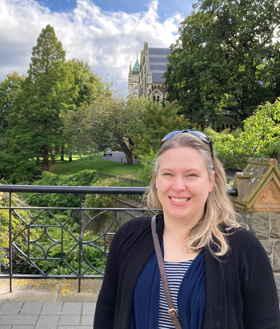

Private one-to-one tuition in Chemistry, Biology and Mathematics for NCEA students in Years 11 to 13. Based in Gulf Harbour and serving the Whangaparāoa Peninsula and Auckland's North Shore. 为 NCEA 11 至 13 学年学生提供化学、生物与数学的一对一私人辅导。本辅导设于 Gulf Harbour，覆盖 Whangaparāoa 半岛及奥克兰北岸地区。

Lessons are tailored to the student's NCEA Level and to the specific Achievement Standards being taught at their school. The aim is genuine understanding of the material, with proper preparation for both internal and external assessments. 课程根据学生的 NCEA 级别及其学校所教的具体成就标准 (Achievement Standards) 量身定制。目标是让学生真正掌握学习内容，并为校内 (Internal) 和校外 (External) 评核做好充分准备。
Atomic structure, bonding, energy changes, organic chemistry, oxidation and reduction (redox), chemical reactivity, thermochemistry, equilibrium and aqueous systems, and spectroscopy at Level 3. 原子结构、化学键、能量变化、有机化学、氧化还原 (redox)、化学反应性、热化学、化学平衡与水溶液体系，3 级课程亦涵盖光谱学。
Cell biology, genetics, gene expression, animal behaviour, homeostasis, ecology, plant and animal responses, evolution and speciation, and human evolution. Particular focus at Level 3 on the human biology standards: human evolution, homeostasis, genetic transfer and socio-scientific issues. Taught by a doctor with experience of clinical practice and biomedical teaching at university level. 细胞生物学、遗传学、基因表达、动物行为、稳态 (homeostasis)、生态学、动植物反应、进化与物种形成，以及人类进化。3 级阶段尤其专注于人体生物学相关成就标准：人类进化、人体稳态、基因转移以及社会科学议题。由具有临床医学实践经验及大学医学生物教学经验的医生任教。
Algebra, trigonometry, geometry and statistics across all three levels. At Level 3, the Calculus path covers differentiation, integration, complex numbers and the algebra needed for first-year university science. 三个级别均涵盖代数、三角学、几何与统计学。3 级课程的微积分路径涵盖微分、积分、复数，以及大学一年级理科所需的代数知识。
Entry to medical school in New Zealand requires successful completion of a competitive first year of either Otago's Health Sciences First Year (HSFY) or Auckland's Bachelor of Health Sciences (BHSc) or Bachelor of Science (BSc). Both universities recommend specific Level 3 sciences as preparation. Students who arrive at university without that grounding generally find the first-year papers considerably more difficult. 在新西兰申请医学院须先完成奥塔哥大学的健康科学第一年 (HSFY) 或奥克兰大学的健康科学学士学位 (BHSc) 或理学学士学位 (BSc) 的第一年课程，竞争激烈。两所大学均建议学生在 NCEA 3 级修读特定的理科科目作为准备。若学生未掌握相关基础，第一年大学课程通常会显得相当困难。
The priority at Level 1 is preserving every Level 2 science option. Most schools offer the core Level 1 Science Achievement Standards covering biology, chemistry and physics; some split these into separate subjects. Mathematics and English are the other essential subjects to carry forward. 1 级阶段最重要的是为 2 级所有理科科目保留选择空间。多数学校开设涵盖生物、化学和物理的 1 级核心科学成就标准；部分学校将其分开教授。数学和英文是另外两门必修科目。
Level 2 is the gateway to Level 3. A student who does not take Chemistry, Biology and Physics at Level 2 cannot take them at Level 3, which closes off the corresponding science papers in first-year health sciences at Otago and Auckland. Key Level 2 topics include genetic variation, gene expression, animal behaviour, cellular processes, homeostasis, organic chemistry, redox, mechanics, waves, and atomic and nuclear physics. 2 级是通往 3 级的关键阶段。若学生未在 2 级修读化学、生物和物理，便无法在 3 级继续修读这些科目，相应地也无法在奥塔哥或奥克兰大学医学预科第一年修读对应的理科课程。2 级重点主题包括遗传变异、基因表达、动物行为、细胞过程、稳态 (homeostasis)、有机化学、氧化还原、力学、波动以及原子与核物理。
Auckland's BHSc strongly recommends Biology, Chemistry and Physics, together with an English-rich subject. Otago's HSFY strongly recommends Chemistry, Physics and Mathematics with Calculus. Taking all three sciences along with Mathematics with Calculus satisfies both universities' recommendations. 奥克兰大学的健康科学学士学位 (BHSc) 强烈建议修读生物、化学和物理，并搭配一门重视英语的科目。奥塔哥大学的健康科学第一年 (HSFY) 则强烈建议修读化学、物理和微积分数学。同时修读三门理科加上微积分数学，可同时满足两所大学的建议。
I am a UK-trained medical doctor (BMBS, BMedSci). Over the past two decades I have taught at the University of Cambridge, the University of Otago and the University of Auckland, and worked clinically across hospital medicine and pathology in the United Kingdom and New Zealand. 本人为英国培训的医学医生 (BMBS, BMedSci)。过去二十年间，曾任教于剑桥大学、奥塔哥大学及奥克兰大学，并于英国和新西兰从事医院医学及病理学的临床工作。
More recently I have been a Senior Professional Practice Fellow at the University of Otago, tutoring medical students across pathology and clinical modules. I have also led the development of digital learning content for academic and industry partners, including long-running collaborations with the University of Auckland and the University of Oxford. 近年来在奥塔哥大学担任高级专业实践研究员 (Senior Professional Practice Fellow)，为医学生讲授病理学及临床模块。亦曾主导多家学术及产业机构的数字学习内容开发，包括与奥克兰大学和牛津大学的长期合作项目。
With younger students I work patiently and methodically. The objective is for the student to understand the material properly, so that they sit examinations with less anxiety and clearer thinking. 面对年轻学生时，本人以耐心而有条理的方式教学。目标是让学生真正理解学习内容，从而以更平静的心态和更清晰的思路应对考试。
Tuition begins with a short conversation about where the student is, what they are aiming for, and where they are finding the work difficult. Each lesson has a written plan, each term has a defined goal, and parents receive a regular progress update. 课程从一段简短交谈开始，了解学生当前的程度、目标，以及在学习上遇到的困难。每节课均有书面计划，每学期设定明确目标，家长定期收到学习进度报告。
A short conversation with parents and student to discuss the NCEA Level being taken, current grades and target grades. 与家长和学生进行简短交谈，了解学生当前修读的 NCEA 级别、目前成绩与目标成绩。
A study plan mapped to the specific NCEA Achievement Standards being taught at the student's school, with milestones for each term and structured preparation for both internal and external assessments. 根据学生学校所教的具体 NCEA 成就标准 (Achievement Standards) 制定学习计划，每学期设有学习里程碑，并为校内与校外评核做有系统的准备。
One-to-one lessons in person on the North Shore or Whangaparāoa Peninsula, in booked library rooms. 在北岸或 Whangaparāoa 半岛进行面对面一对一教学，使用预约的图书馆房间。
I am based in Gulf Harbour and travel for in-person lessons across the Whangaparāoa Peninsula and the wider North Shore, teaching in booked library rooms. 本人居住于 Gulf Harbour，可前往 Whangaparāoa 半岛及更广泛的北岸地区，使用预约的图书馆房间进行面对面教学。
Please send an email or text with the student's year group, school and the subjects they need help with. I will reply within a day to arrange a time. 请发送电子邮件或短信，告知学生的年级、就读学校以及需要辅导的科目。我将在一日内回复并安排时间。